Code
# Configure logging for the notebook
import logging
from visualization import set_log_level
# Set log level - change to DEBUG for more detailed logs or WARNING to reduce output
set_log_level('INFO')Comparison of DFS and LDS search for max-marginal-regret branching.
# Configure logging for the notebook
import logging
from visualization import set_log_level
# Set log level - change to DEBUG for more detailed logs or WARNING to reduce output
set_log_level('INFO')First, let’s compare the search strategies across all instances, independent of the belief propagation algorithm and hole count.
# Import the visualization library
import matplotlib.pyplot as plt
from data_loader import DataLoader
from experiment_config import (
BPAlgorithm, Branching, ExperimentFilter
)
# Import our visualization functions
from visualization import (
create_comparison_table,
plot_normalized_solution_quality,
plot_optimal_solutions_reached
)
# Set up the data loader - data will be loaded once on initialization
data_loader = DataLoader(logs_dir="logs")
# Define all instances
all_instances = list(range(1, 11))
# Create a filter for all instances with max-marginal-regret branching
all_instances_filter = ExperimentFilter.from_dict({
'algorithm.branching': 'max_marginal_regret',
'algorithm.oracle_weight': 1.0
})
# Load all data matching the filter
all_instances_df = data_loader.load_experiments_for_comparison(all_instances_filter)
# Plot the number of instances reaching optimal solutions, grouped by search type
fig = plot_optimal_solutions_reached(
all_instances_df,
group_by=['search_type'],
log_scale=True,
)
plt.title("Instances Reaching Optimal Solutions - All BPs and Hole Counts")
plt.show()2025-03-05 19:47:04,534 - data_loader - INFO - Loaded 30 optimal solutions from solutions
2025-03-05 19:47:04,550 - data_loader - INFO - Scanning 6980 files in logs
2025-03-05 19:47:08,667 - data_loader - INFO - Scanned 6980 files, loaded 6980 experiments
2025-03-05 19:47:08,671 - data_loader - INFO - Filtered 120 results out of 1840
2025-03-05 19:47:08,672 - data_loader - INFO - Loaded 120 experiments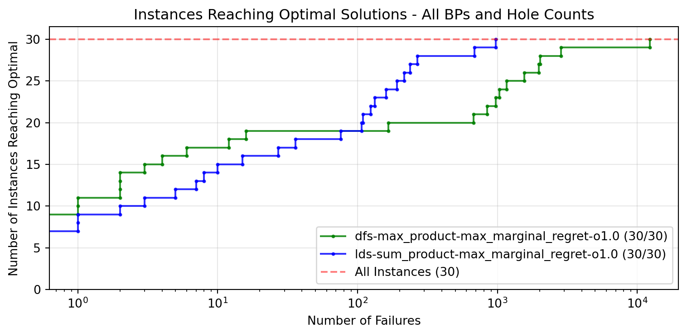
Max-product find first solutions with higher score.
For 200 holes, Sum-product find first solutions with ~0 failures, while max-product takes a few: with DFS its either ~0 or ~50, while with LDS it is ~10.
For 250+ holes, all find first solutions with ~0 failures.
DFS with sum-product takes more time to find the optimal solution.
The other approaches are quite similar.
Max-product : DFS proves faster for 300 holes. If less holes, DFS sometimes beats LDS and sometimes the opposite.
Sum-product : LDS is faster for 200 holes. If more holes, DFS is equivalent or better.
import matplotlib.pyplot as plt
from data_loader import DataLoader
from experiment_config import (
BPAlgorithm, Branching, ExperimentFilter
)
from visualization import (
create_comparison_table, plot_normalized_solution_quality
)
# Set up the data loader - data will be loaded once on initialization
data_loader = DataLoader(logs_dir="logs")
# Define all instances
all_instances = list(range(1, 11))2025-03-05 19:47:09,678 - data_loader - INFO - Loaded 30 optimal solutions from solutions
2025-03-05 19:47:09,686 - data_loader - INFO - Scanning 6980 files in logs
2025-03-05 19:47:11,984 - data_loader - INFO - Scanned 6980 files, loaded 6980 experiments# 200 Holes - Sum-Product
sp_200_filter = ExperimentFilter.from_dict({
'instance.nb_holes': 200,
'algorithm.bp': 'sum_product',
'algorithm.branching': 'max_marginal_regret',
'algorithm.oracle_weight': 1.0
})
sp_200_df = data_loader.load_experiments_for_comparison(sp_200_filter)
# Create comparison table with separate tables for each search type
print(create_comparison_table(sp_200_df, group_by=['search_type']))
# Plot normalized solution quality
fig = plot_normalized_solution_quality(sp_200_df, group_by=['search_type'], log_scale=True)
plt.title("Normalized Solution Quality - 200 Holes (Sum-Product)")
plt.show()
# Plot optimal solutions reached for this specific hole count
fig = plot_optimal_solutions_reached(sp_200_df, group_by=['search_type'], log_scale=True)
plt.title("Instances Reaching Optimal Solutions - 200 Holes (Sum-Product)")
plt.show()2025-03-05 19:47:12,011 - data_loader - INFO - Filtered 20 results out of 1840
2025-03-05 19:47:12,012 - data_loader - INFO - Loaded 20 experiments### search_type: lds
| i | fs Sc | fs #f | ls Sc | ls #f | #fail | #sols | comp. |
|----:|--------:|--------:|--------:|--------:|--------:|--------:|:--------|
| 1 | 183 | 0 | 229 | 113 | 912 | 14 | Yes |
| 2 | 219 | 0 | 284 | 109 | 577 | 20 | Yes |
| 3 | 205 | 0 | 241 | 107 | 435 | 13 | Yes |
| 4 | 204 | 0 | 247 | 124 | 419 | 11 | Yes |
| 5 | 212 | 0 | 244 | 88 | 344 | 13 | Yes |
| 6 | 166 | 0 | 232 | 120 | 530 | 13 | Yes |
| 7 | 203 | 0 | 250 | 109 | 239 | 15 | Yes |
| 8 | 228 | 0 | 252 | 116 | 140 | 8 | Yes |
| 9 | 151 | 0 | 222 | 105 | 503 | 24 | Yes |
| 10 | 202 | 0 | 220 | 88 | 444 | 8 | Yes |
### search_type: dfs
| i | fs Sc | fs #f | ls Sc | ls #f | #fail | #sols | comp. |
|----:|--------:|--------:|--------:|--------:|--------:|--------:|:--------|
| 1 | 177 | 0 | 229 | 1033 | 1296173 | 17 | No |
| 2 | 229 | 0 | 283 | 44367 | 277338 | 15 | No |
| 3 | 210 | 0 | 241 | 399 | 592 | 10 | Yes |
| 4 | 204 | 0 | 247 | 975 | 1162 | 12 | Yes |
| 5 | 212 | 0 | 244 | 21502 | 22137 | 13 | Yes |
| 6 | 174 | 0 | 232 | 1561 | 1823 | 22 | Yes |
| 7 | 210 | 0 | 249 | 712 | 408052 | 16 | No |
| 8 | 208 | 0 | 252 | 842 | 948 | 17 | Yes |
| 9 | 173 | 0 | 222 | 10686 | 11883 | 20 | Yes |
| 10 | 211 | 0 | 220 | 1163 | 2119 | 7 | Yes |
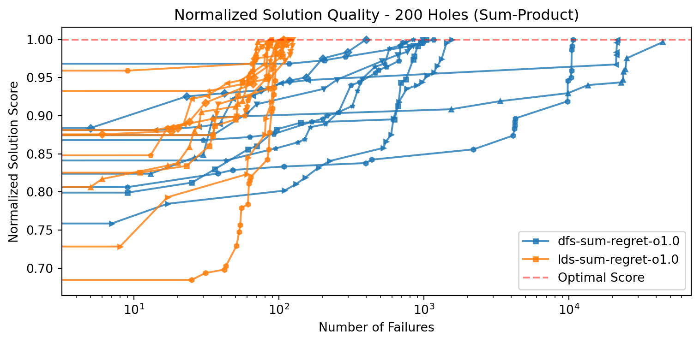
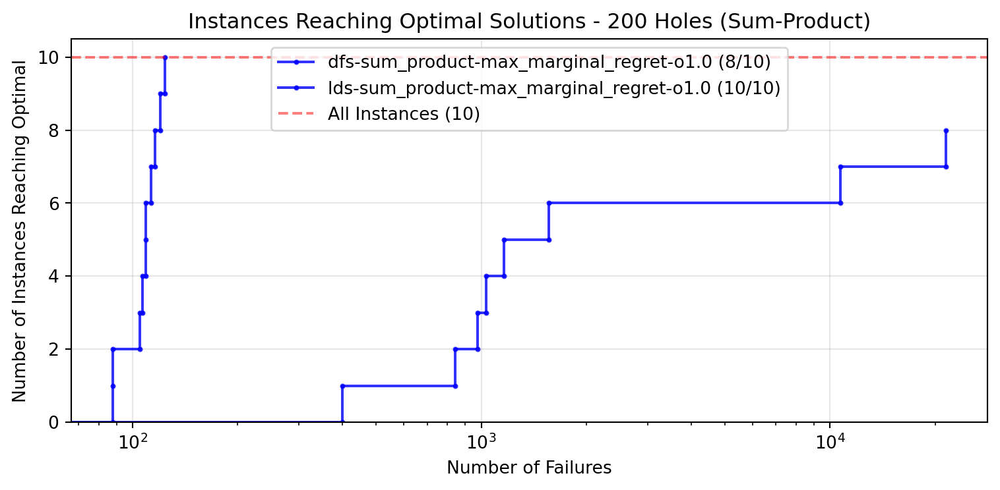
# 250 Holes - Sum-Product
sp_250_filter = ExperimentFilter.from_dict({
'instance.nb_holes': 250,
'algorithm.bp': 'sum_product',
'algorithm.branching': 'max_marginal_regret',
'algorithm.oracle_weight': 1.0
})
sp_250_df = data_loader.load_experiments_for_comparison(sp_250_filter)
# Create comparison table with separate tables for each search type
print(create_comparison_table(sp_250_df, group_by=['search_type']))
# Plot normalized solution quality
fig = plot_normalized_solution_quality(sp_250_df, group_by=['search_type'], log_scale=True)
plt.title("Normalized Solution Quality - 250 Holes (Sum-Product)")
plt.show()
# Plot optimal solutions reached for this specific hole count
fig = plot_optimal_solutions_reached(sp_250_df, group_by=['search_type'], log_scale=True)
plt.title("Instances Reaching Optimal Solutions - 250 Holes (Sum-Product)")
plt.show()2025-03-05 19:47:13,702 - data_loader - INFO - Filtered 20 results out of 1840
2025-03-05 19:47:13,706 - data_loader - INFO - Loaded 20 experiments### search_type: dfs
| i | fs Sc | fs #f | ls Sc | ls #f | #fail | #sols | comp. |
|----:|--------:|--------:|--------:|--------:|--------:|--------:|:--------|
| 1 | 211 | 0 | 253 | 556 | 1061717 | 13 | No |
| 2 | 229 | 0 | 240 | 3562 | 1385449 | 3 | No |
| 3 | 184 | 0 | 207 | 1517 | 737550 | 7 | No |
| 4 | 215 | 0 | 275 | 1982 | 2459 | 16 | Yes |
| 5 | 216 | 0 | 233 | 464874 | 1335972 | 5 | No |
| 6 | 240 | 0 | 255 | 290 | 984294 | 5 | No |
| 7 | 202 | 0 | 230 | 414 | 842360 | 11 | No |
| 8 | 226 | 0 | 286 | 2025 | 2377 | 21 | Yes |
| 9 | 193 | 0 | 241 | 2845 | 4468 | 17 | Yes |
| 10 | 225 | 0 | 242 | 1577 | 1778716 | 7 | No |
### search_type: lds
| i | fs Sc | fs #f | ls Sc | ls #f | #fail | #sols | comp. |
|----:|--------:|--------:|--------:|--------:|--------:|--------:|:--------|
| 1 | 221 | 0 | 272 | 134 | 2578 | 21 | Yes |
| 2 | 204 | 0 | 266 | 181 | 42971 | 18 | No |
| 3 | 184 | 0 | 224 | 219 | 3958 | 13 | Yes |
| 4 | 209 | 0 | 275 | 191 | 970 | 19 | Yes |
| 5 | 215 | 0 | 267 | 182 | 2670 | 18 | Yes |
| 6 | 199 | 0 | 266 | 190 | 407 | 25 | Yes |
| 7 | 202 | 0 | 265 | 218 | 20947 | 28 | No |
| 8 | 226 | 0 | 286 | 188 | 1270 | 21 | Yes |
| 9 | 177 | 0 | 241 | 160 | 1839 | 15 | Yes |
| 10 | 222 | 0 | 270 | 151 | 1076 | 21 | Yes |
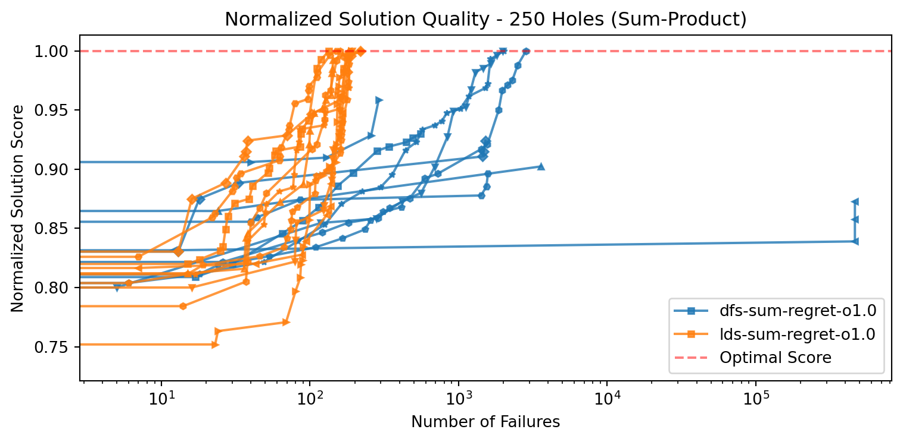
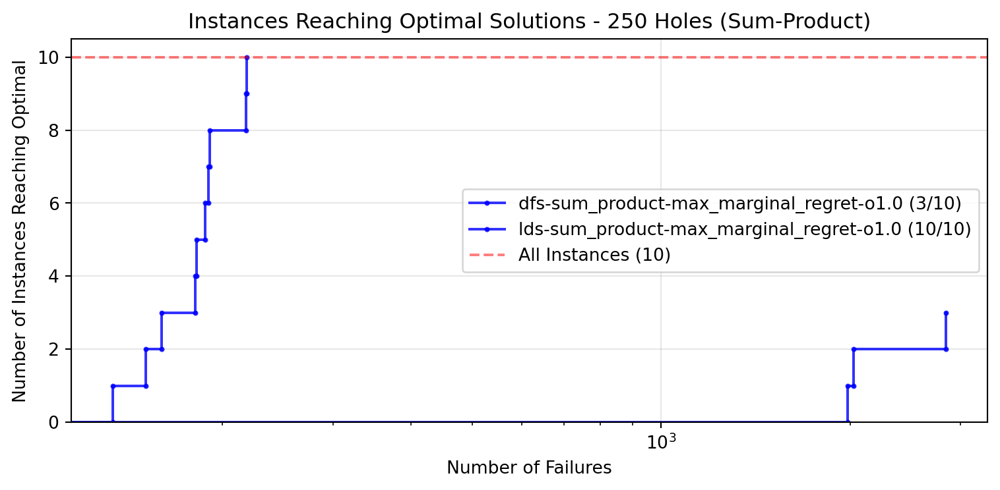
# 300 Holes - Sum-Product
sp_300_filter = ExperimentFilter.from_dict({
'instance.nb_holes': 300,
'algorithm.bp': 'sum_product',
'algorithm.branching': 'max_marginal_regret',
'algorithm.oracle_weight': 1.0
})
sp_300_df = data_loader.load_experiments_for_comparison(sp_300_filter)
# Create comparison table with separate tables for each search type
print(create_comparison_table(sp_300_df, group_by=['search_type']))
# Plot normalized solution quality
fig = plot_normalized_solution_quality(sp_300_df, group_by=['search_type'], log_scale=True)
plt.title("Normalized Solution Quality - 300 Holes (Sum-Product)")
plt.show()
# Plot optimal solutions reached for this specific hole count
fig = plot_optimal_solutions_reached(sp_300_df, group_by=['search_type'], log_scale=True)
plt.title("Instances Reaching Optimal Solutions - 300 Holes (Sum-Product)")
plt.show()2025-03-05 19:47:15,472 - data_loader - INFO - Filtered 20 results out of 1840
2025-03-05 19:47:15,473 - data_loader - INFO - Loaded 20 experiments### search_type: lds
| i | fs Sc | fs #f | ls Sc | ls #f | #fail | #sols | comp. |
|----:|--------:|--------:|--------:|--------:|--------:|--------:|:--------|
| 1 | 234 | 0 | 305 | 236 | 97045 | 35 | Yes |
| 2 | 223 | 0 | 322 | 684 | 234252 | 29 | Yes |
| 3 | 248 | 0 | 308 | 303 | 20126 | 30 | Yes |
| 4 | 219 | 0 | 302 | 268 | 36918 | 28 | Yes |
| 5 | 216 | 0 | 272 | 491 | 11419 | 23 | Yes |
| 6 | 245 | 0 | 282 | 238 | 37374 | 16 | Yes |
| 7 | 234 | 0 | 277 | 216 | 99832 | 14 | No |
| 8 | 228 | 0 | 284 | 218 | 110039 | 20 | Yes |
| 9 | 243 | 0 | 280 | 254 | 28529 | 15 | Yes |
| 10 | 219 | 0 | 295 | 972 | 97105 | 34 | No |
### search_type: dfs
| i | fs Sc | fs #f | ls Sc | ls #f | #fail | #sols | comp. |
|----:|--------:|--------:|--------:|--------:|--------:|--------:|:--------|
| 1 | 215 | 0 | 299 | 6009 | 1792275 | 27 | No |
| 2 | 247 | 0 | 276 | 138 | 5698784 | 7 | No |
| 3 | 248 | 0 | 306 | 9270 | 1358576 | 30 | No |
| 4 | 230 | 0 | 248 | 101 | 3455151 | 5 | No |
| 5 | 227 | 0 | 262 | 1079 | 1482567 | 13 | No |
| 6 | 245 | 0 | 282 | 18571 | 37737 | 14 | Yes |
| 7 | 231 | 0 | 275 | 5415 | 757135 | 15 | No |
| 8 | 228 | 0 | 270 | 2609 | 379279 | 13 | No |
| 9 | 232 | 0 | 236 | 59 | 4523292 | 3 | No |
| 10 | 225 | 0 | 254 | 751 | 857672 | 12 | No |
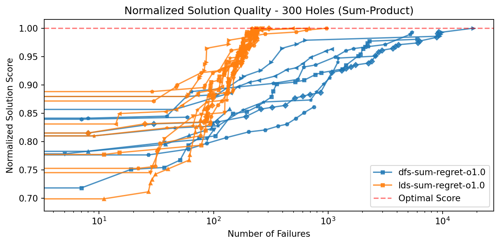
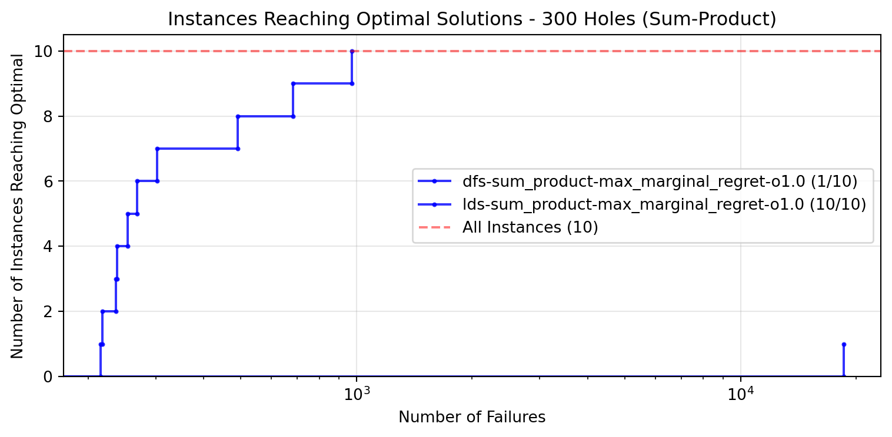
# Filter for max-product with max-marginal-regret
mp_filter = ExperimentFilter.from_dict({
'algorithm.bp': BPAlgorithm.MAX_PRODUCT,
'algorithm.branching': Branching.MAX_MARGINAL_REGRET,
'algorithm.oracle_weight': 1.0
})# 200 Holes - Max-Product
mp_200_filter = ExperimentFilter.from_dict({
'instance.nb_holes': 200,
'algorithm.bp': 'max_product',
'algorithm.branching': 'max_marginal_regret',
'algorithm.oracle_weight': 1.0
})
mp_200_df = data_loader.load_experiments_for_comparison(mp_200_filter)
# Create comparison table with separate tables for each search type
print(create_comparison_table(mp_200_df, group_by=['search_type']))
# Plot normalized solution quality
fig = plot_normalized_solution_quality(mp_200_df, group_by=['search_type'], log_scale=True)
plt.title("Normalized Solution Quality - 200 Holes (Max-Product)")
plt.show()
# Plot optimal solutions reached for this specific hole count
fig = plot_optimal_solutions_reached(mp_200_df, group_by=['search_type'], log_scale=True)
plt.title("Instances Reaching Optimal Solutions - 200 Holes (Max-Product)")
plt.show()2025-03-05 19:47:17,239 - data_loader - INFO - Filtered 20 results out of 1840
2025-03-05 19:47:17,241 - data_loader - INFO - Loaded 20 experiments### search_type: dfs
| i | fs Sc | fs #f | ls Sc | ls #f | #fail | #sols | comp. |
|----:|--------:|--------:|--------:|--------:|--------:|--------:|:--------|
| 1 | 229 | 8 | 229 | 8 | 53 | 1 | Yes |
| 2 | 284 | 677 | 284 | 677 | 728 | 1 | Yes |
| 3 | 241 | 166 | 241 | 166 | 212 | 1 | Yes |
| 4 | 247 | 7 | 247 | 7 | 54 | 1 | Yes |
| 5 | 244 | 6 | 244 | 6 | 60 | 1 | Yes |
| 6 | 232 | 15 | 232 | 15 | 102 | 1 | Yes |
| 7 | 250 | 4 | 250 | 4 | 47 | 1 | Yes |
| 8 | 252 | 0 | 252 | 0 | 33 | 1 | Yes |
| 9 | 222 | 12305 | 222 | 12305 | 12358 | 1 | Yes |
| 10 | 220 | 86 | 220 | 86 | 167 | 1 | Yes |
### search_type: lds
| i | fs Sc | fs #f | ls Sc | ls #f | #fail | #sols | comp. |
|----:|--------:|--------:|--------:|--------:|--------:|--------:|:--------|
| 1 | 222 | 16 | 229 | 27 | 218 | 2 | Yes |
| 2 | 284 | 14 | 284 | 14 | 144 | 1 | Yes |
| 3 | 237 | 48 | 241 | 108 | 237 | 2 | Yes |
| 4 | 241 | 32 | 247 | 53 | 245 | 2 | Yes |
| 5 | 244 | 76 | 244 | 76 | 238 | 1 | Yes |
| 6 | 232 | 8 | 232 | 8 | 585 | 1 | Yes |
| 7 | 250 | 15 | 250 | 15 | 78 | 1 | Yes |
| 8 | 252 | 0 | 252 | 0 | 51 | 1 | Yes |
| 9 | 222 | 36 | 222 | 36 | 497 | 1 | Yes |
| 10 | 220 | 5 | 220 | 5 | 431 | 1 | Yes |
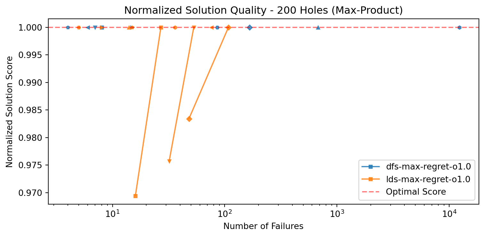
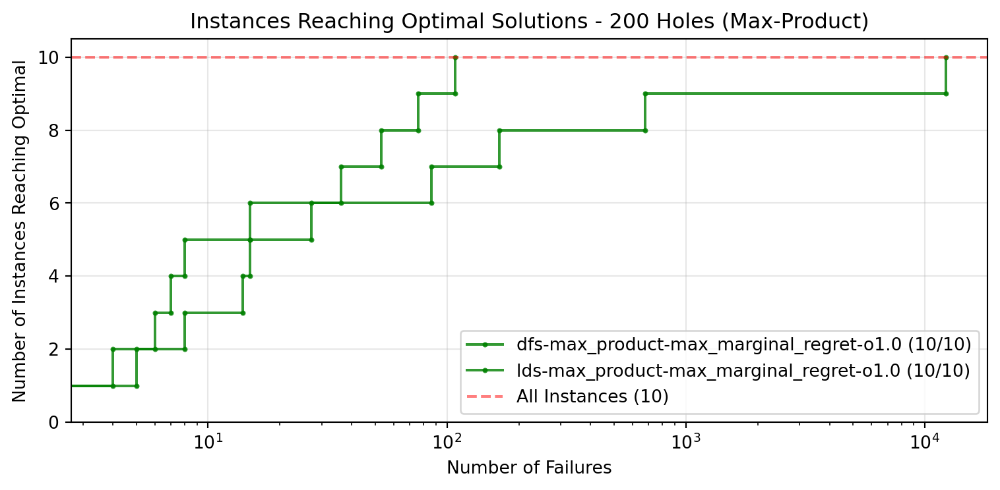
# 250 Holes - Max-Product
mp_250_filter = ExperimentFilter.from_dict({
'instance.nb_holes': 250,
'algorithm.bp': 'max_product',
'algorithm.branching': 'max_marginal_regret',
'algorithm.oracle_weight': 1.0
})
mp_250_df = data_loader.load_experiments_for_comparison(mp_250_filter)
# Create comparison table with separate tables for each search type
print(create_comparison_table(mp_250_df, group_by=['search_type']))
# Plot normalized solution quality
fig = plot_normalized_solution_quality(mp_250_df, group_by=['search_type'], log_scale=True)
plt.title("Normalized Solution Quality - 250 Holes (Max-Product)")
plt.show()
# Plot optimal solutions reached for this specific hole count
fig = plot_optimal_solutions_reached(mp_250_df, group_by=['search_type'], log_scale=True)
plt.title("Instances Reaching Optimal Solutions - 250 Holes (Max-Product)")
plt.show()2025-03-05 19:47:18,589 - data_loader - INFO - Filtered 20 results out of 1840
2025-03-05 19:47:18,590 - data_loader - INFO - Loaded 20 experiments### search_type: lds
| i | fs Sc | fs #f | ls Sc | ls #f | #fail | #sols | comp. |
|----:|--------:|--------:|--------:|--------:|--------:|--------:|:--------|
| 1 | 272 | 0 | 272 | 0 | 973 | 1 | Yes |
| 2 | 266 | 3 | 266 | 3 | 36865 | 1 | Yes |
| 3 | 223 | 17 | 224 | 133 | 20309 | 2 | Yes |
| 4 | 275 | 1 | 275 | 1 | 477 | 1 | Yes |
| 5 | 267 | 7 | 267 | 7 | 444 | 1 | Yes |
| 6 | 266 | 0 | 266 | 0 | 471 | 1 | Yes |
| 7 | 265 | 2 | 265 | 2 | 1374 | 1 | Yes |
| 8 | 286 | 0 | 286 | 0 | 580 | 1 | Yes |
| 9 | 241 | 5 | 241 | 5 | 917 | 1 | Yes |
| 10 | 270 | 0 | 270 | 0 | 815 | 1 | Yes |
### search_type: dfs
| i | fs Sc | fs #f | ls Sc | ls #f | #fail | #sols | comp. |
|----:|--------:|--------:|--------:|--------:|--------:|--------:|:--------|
| 1 | 272 | 0 | 272 | 0 | 184 | 1 | Yes |
| 2 | 266 | 16 | 266 | 16 | 5082 | 1 | Yes |
| 3 | 224 | 3 | 224 | 3 | 500 | 1 | Yes |
| 4 | 275 | 12 | 275 | 12 | 115 | 1 | Yes |
| 5 | 267 | 12 | 267 | 12 | 134 | 1 | Yes |
| 6 | 266 | 0 | 266 | 0 | 117 | 1 | Yes |
| 7 | 265 | 2 | 265 | 2 | 1738 | 1 | Yes |
| 8 | 286 | 2 | 286 | 2 | 157 | 1 | Yes |
| 9 | 241 | 2 | 241 | 2 | 186 | 1 | Yes |
| 10 | 270 | 0 | 270 | 0 | 176 | 1 | Yes |
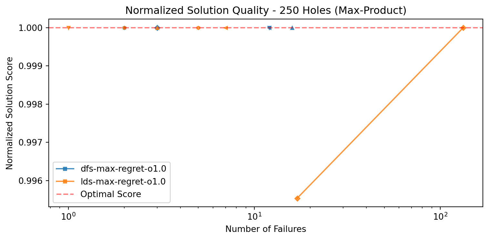
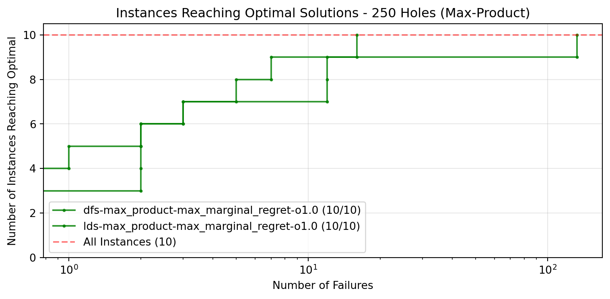
# 300 Holes - Max-Product
mp_300_filter = ExperimentFilter.from_dict({
'instance.nb_holes': 300,
'algorithm.bp': 'max_product',
'algorithm.branching': 'max_marginal_regret',
'algorithm.oracle_weight': 1.0
})
mp_300_df = data_loader.load_experiments_for_comparison(mp_300_filter)
# Create comparison table with separate tables for each search type
print(create_comparison_table(mp_300_df, group_by=['search_type']))
# Plot normalized solution quality
fig = plot_normalized_solution_quality(mp_300_df, group_by=['search_type'], log_scale=True)
plt.title("Normalized Solution Quality - 300 Holes (Max-Product)")
plt.show()
# Plot optimal solutions reached for this specific hole count
fig = plot_optimal_solutions_reached(mp_300_df, group_by=['search_type'], log_scale=True)
plt.title("Instances Reaching Optimal Solutions - 300 Holes (Max-Product)")
plt.show()2025-03-05 19:47:19,742 - data_loader - INFO - Filtered 20 results out of 1840
2025-03-05 19:47:19,743 - data_loader - INFO - Loaded 20 experiments### search_type: dfs
| i | fs Sc | fs #f | ls Sc | ls #f | #fail | #sols | comp. |
|----:|--------:|--------:|--------:|--------:|--------:|--------:|:--------|
| 1 | 305 | 0 | 305 | 0 | 2833 | 1 | Yes |
| 2 | 322 | 1 | 322 | 1 | 1171 | 1 | Yes |
| 3 | 308 | 0 | 308 | 0 | 998 | 1 | Yes |
| 4 | 302 | 0 | 302 | 0 | 39463 | 1 | Yes |
| 5 | 272 | 1 | 272 | 1 | 23949 | 1 | Yes |
| 6 | 282 | 0 | 282 | 0 | 7286 | 1 | Yes |
| 7 | 277 | 0 | 277 | 0 | 9496 | 1 | Yes |
| 8 | 284 | 2 | 284 | 2 | 3256 | 1 | Yes |
| 9 | 280 | 0 | 280 | 0 | 1519 | 1 | Yes |
| 10 | 295 | 2 | 295 | 2 | 91121 | 1 | Yes |
### search_type: lds
| i | fs Sc | fs #f | ls Sc | ls #f | #fail | #sols | comp. |
|----:|--------:|--------:|--------:|--------:|--------:|--------:|:--------|
| 1 | 305 | 0 | 305 | 0 | 324879 | 1 | No |
| 2 | 322 | 0 | 322 | 0 | 231270 | 1 | Yes |
| 3 | 308 | 1 | 308 | 1 | 40133 | 1 | Yes |
| 4 | 302 | 0 | 302 | 0 | 317631 | 1 | No |
| 5 | 272 | 1 | 272 | 1 | 12526 | 1 | Yes |
| 6 | 282 | 0 | 282 | 0 | 62333 | 1 | Yes |
| 7 | 277 | 0 | 277 | 0 | 61335 | 1 | Yes |
| 8 | 284 | 10 | 284 | 10 | 26098 | 1 | Yes |
| 9 | 280 | 0 | 280 | 0 | 12543 | 1 | Yes |
| 10 | 294 | 0 | 294 | 0 | 88719 | 1 | No |
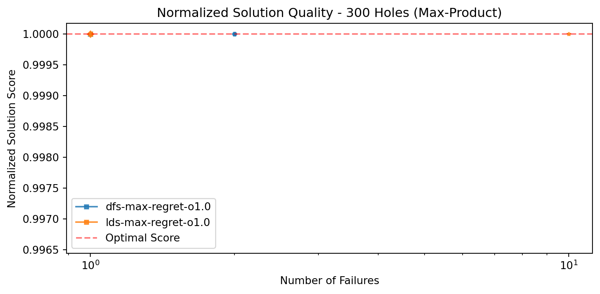
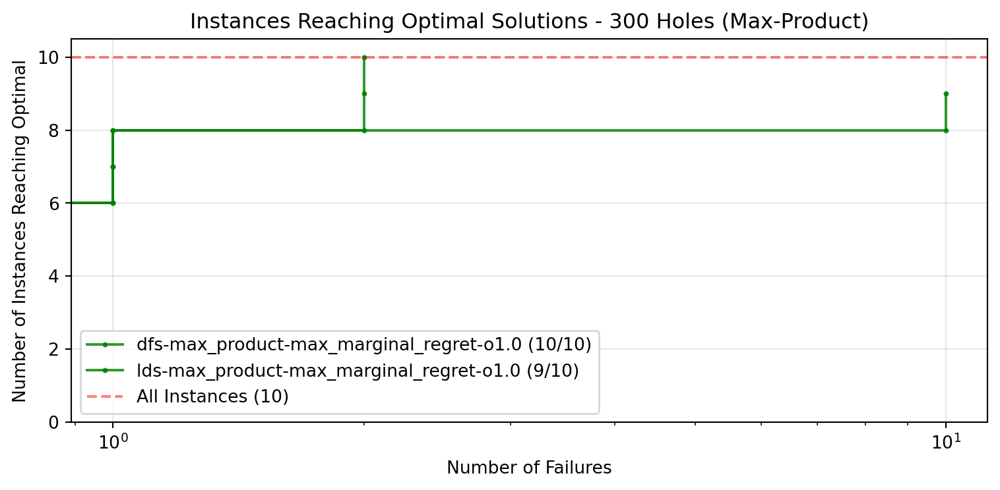